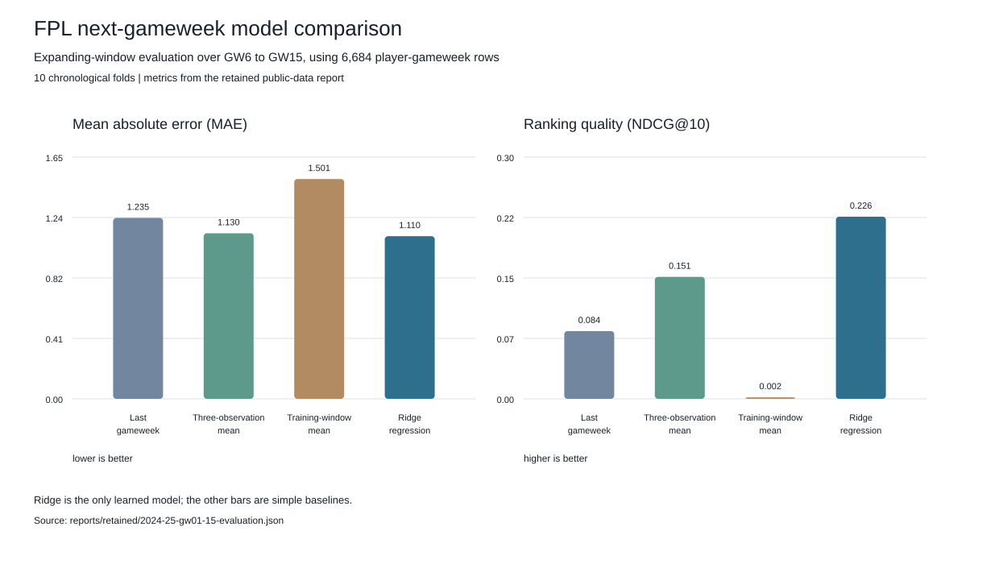

Results at a glance
Ten chronological folds score gameweeks 6 to 15 after training on earlier weeks. The figures use public 2024-25 data at a pinned source revision.

How the comparison is framed
The model is a simple ridge regression. The harder part is making sure each feature was known at the time of prediction, then testing the alternatives as the season progresses.
Each completed snapshot is checked before player form and season-to-date features are built. Those features are paired with the following gameweek's points, and the same forward-moving folds score recent-form baselines alongside ridge regression.
- Inputs
Completed, season-tagged gameweek snapshots - Guardrails
Sequence, coverage, and data-shape checks - Local delivery
Portable JSON, verified DuckDB batches, read-only API
What the figures mean
This is not a live deployment or a whole-season claim. It is a fixed comparison on 2024-25 gameweeks 1 to 15, using settings chosen before these figures were produced. Source records and fitted model files are not included; the repository keeps aggregate metrics and a file-level provenance manifest.